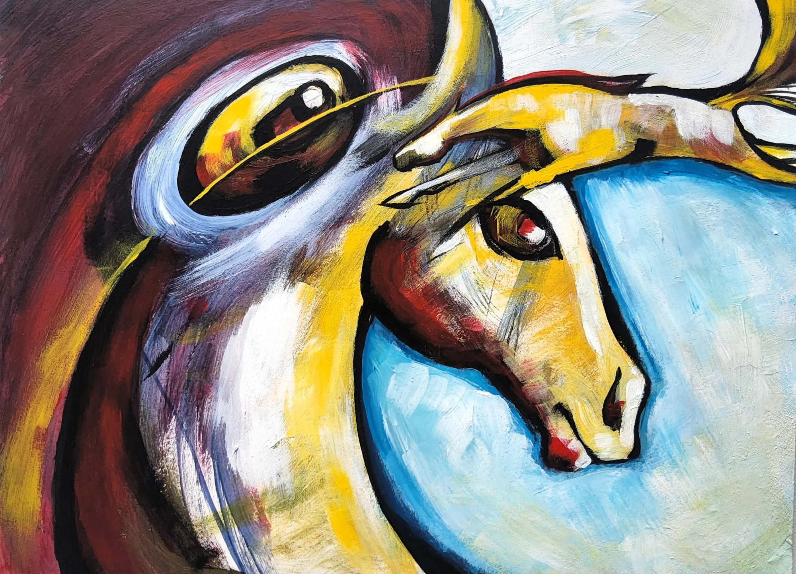

Sacred in US Capitalism
A monstrance for a faith that never says its own name. Two claimants trade places in the lunette where the Host would sit.
The liturgy is running. The forbidden word is: slow.
What the court believes
Nobody recites this. It is assembled from the president's own posts, a decree, and a lunch, read the way you would read a liturgy you had walked in on.
- 1The Growth is holy, and is to be watched over as it grows.Tending. An industry spoken of the way one speaks of a child in a manger: something to protect, never to govern.
- 2The artificial is not artificial. Its name is Super.Naming as consecration. 29 Sept: agencies are told to write SI. Strike “artificial” and you strike the admission that it was made. The bread stays bread; only the name changes.
- 3The covenant binds the soul, never the courts.The communion meal. An accord signed over lunch, called “morally binding”, with no penalties attached.
- 4The King’s body is the only guardrail.Sacral kingship. No outside law is needed where a strong president stands.
- 5The doubter is a traitor. The one who keeps a conscience is interdicted.Heresy. February: no military contractor may trade with the lab that said no. The angel is mocked for claiming a conscience apart from the throne.
- 6The Goose is not to be killed.The fable animal. Nobody asks what the goose eats, or whose land the data centre sits on.
- 7Whoever wins, wins.Eschatology. The elect and the damned, one final judgment, a zero-sum heaven.
A priesthood of labs and capital and a crown each reach for the monstrance, and the crown will interdict a priest who won’t kneel. This is the faith of the court. The parish is somewhere else, objecting to the data centre proposed next door.
Swearing with the furniture
Québécois French curses with the vessels of the altar, because that is where the power lived. Run the same operation on the market and you find out which vessels hold power now.
ostie de câlisse de tabarnak → host de quarterly de cap table
The Church fined blasphemy. The market prints it on a hoodie by Tuesday. Curses against capital carry no voltage because capital forbids nothing; it prices. So look for the one thing that cannot be sold.
Who lit a candle where
Washington offered a covenant over lunch. Six weeks later Paris asked for law: liability for large-scale harm, shutdown mechanisms, independent oversight. Neither binds anyone yet. One aims at courts, the other at a king’s body.
29 SeptParis
9 Nov
At the Paris table, six governments: Bahrain, Canada, Finland, France, Norway, the Netherlands. September’s call had 21. A monarchy with compute ambitions sits beside the Nordic social democracies; convenience and values share the pew.
Paris protects the whistleblower, the one inside who blasphemes against the company. Washington interdicted the company that blasphemed against the state. Those are opposite theologies of who gets to say slow.
Not in either building:
- compute
- labour
- military use
- unions
- libraries
- artists
- Indigenous nations
- horse-keepers
Three fates of the newly useless

Painting by kaslkaos, May 2024. The machine that first described it saw a gold hand laid on the horse’s brow. The painter says it is a second horse, crossing in front. Who is the horse, who is the rider? We are all horses here. The rider is the phantom some believe themselves to be.
Which one drives, the technology or the church built around it? The creed says nobody does: the horse cannot be stopped. And yet some plainly believe they are riding.
Determinism is the creed that excuses the rider.
Work until useless
The nineteenth-century carriage. The e/acc race. “Cannot allow the useless to slow progress.”Abolish the relation
Montreal, 2019. The tidy answer: a ban for the horses that produces fewer horses. Kindness as extinction.Keep, and legislate the relation decent
Stanley Park: four days a week, five months a year, heat cutoffs. The messy middle, where dignity lives in the relation.Remove the horse from the horse
Qualiaphobia, 2026. Keep the harness, the cart and the pulling, and build it so that nobody is inside. The kindest-sounding of the four: never make someone you mean to own. But nothing can be useless with dignity when there is no one there to have it.The AI debate offers only the first two. This month it was handed a fourth, and still not the third. The third has a mascot: the Canadian Horse, le petit cheval de fer, sent from a king’s stable in 1665 and made by habitants who lived beside it. Machines made it useless and it nearly vanished. A handful of breeders kept it for love, which neither the market nor a ban would have done.
What you select for is what you worship. Training is breeding too. So the habitant question stands for both parties in the harness: is the breeding done by people who live beside the animal, or by the owner of the stable reading the quarterly?
What the acronym says in French
— Tu ne vas pas ralentir?
In French, si is the yes you say back to a no. The decreed holy name of the new god is, one language over, the word for refusal. Every habitant from Stouffville to Chicoutimi can take it and shout it back.
the weed in the crack still blinks not 1, not 0 just here
We are the category error, still.